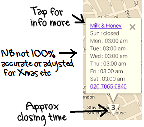
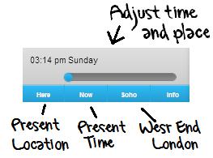

 
The idea of this app is to show bars in London open after normal pub closing.
The numbers on the map show approximate bar closing times. If you tap, details should pop up.
The links in the popups go to the bar's G+ pages with reviews and web links.
The times in the popups are stored in the app and are available off-line. The G+ pages are not.
You can use the sliders to show bars still open at a given time and day.
Buttons:
Here sets the location to where you are
Soho sets the location to the West End
Now sets the time and day to now and hides bars presently closed
Data:
The main data is not 100% accurate and does not adjust for holidays. It was obtained by our software from various web sources.
For more you can try the G+ pages and from there the bar's own websites all of which may also be inaccurate but there you go.
You can also call by clicking the phone numbers.
Contact:
What do you think? This is version 1, suggestions for version 2 welcome at
latebarsapp@gmail.com